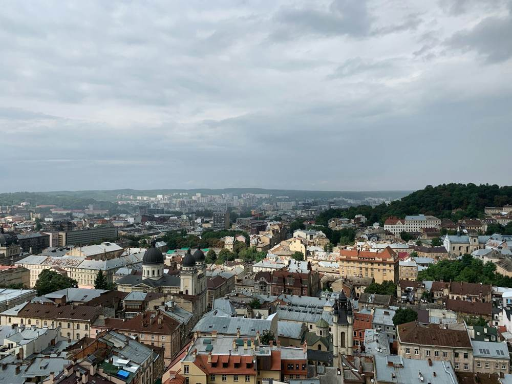
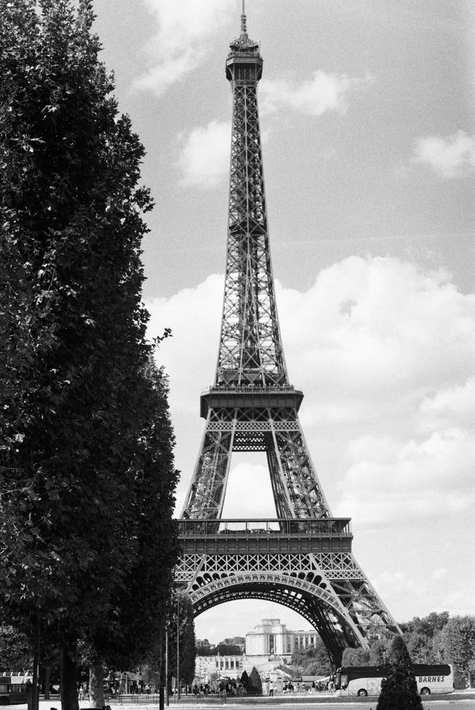

Погляди на маршрут
Зображення з Unsplash збережені локально в проєкті.

Львів. Панорама міського центру нагадує придивитися до силуетів куполів і дахів. 
Париж. Знакова вежа виринає над зеленими кронами й паризькими вулицями. 
Токіо. Вечірнє світло підкреслює контраст сучасного міста й впізнаваної вежі.